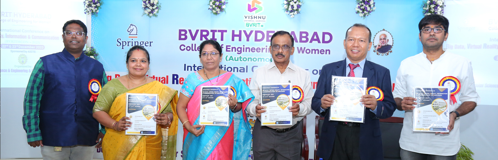

IC2T:
International Conference on Intelligent Computing and Communication Technologies
Venue: BVRITH College of Engineering for Women
25-26 July 2025

Patrons:
- K.V. Vishnu Raju
- Ravi Chandran Raja Gopalan
- Aditya Vissam
General Co-chairs:
- K.V.N. Sunitha
- Atul Negi
- C.K.Mohan
Organizing Chairs:
- S.L.Aruna Rao, BVRITH
- Nagesh Deeri, BVRITH
Conference Chair:
TPCs:
- Sameer S.M, NITC
- Amit Kumar, BioAxis DNA Research
- Rajashree Jain, Treasurer IEEE India Council
- Salman Abdul Moiz, HCU
- Anuradha.S, NITW
- Alex Khang, Senior Portfolio, Grite, USA
Advisory Board Committee:
International Advisory Board
- Prof. Silvia L. Ullo, University of Sannio, Italy
- Prof. Howard Lee, UC Irvine
- Prof. Pai-Yen Chen, University of Illinois at Chicago
- Prof. Suresh M, University of Southampton Malaysia (UoSM)
- Prof. Thuzan Khin, University of Computer Studies, Lashio, Myanmar
National Advisory Board
- Prof. Anil Kumar V, Associate Professor, IIIT Hyderabad (IIITH)
- Prof. G. V. V. Sarma, Associate Professor, IIT Hyderabad (IITH)
- Prof. Salman Abdul Moiz, Professor, University of Hyderabad (HCU)
- Prof. G. R. Sinha, Vice Chancellor, GFSC University, India
- Prof. N. C. Shiva Prakash, Professor, IISc Bangalore
- Prof. M. S. R. Murty, Retd. General Manager, BHEL
Finance Chair:
- Sunil Kumar Ch
- Naga Vishnu Vardhan
The International Conference on Intelligent Computing and Communication Technologies (ICICCT) serves as a premier forum for researchers, academics, industry professionals, and enthusiasts to explore the dynamic intersection of intelligent computing and communication technologies.
This conference provides a platform to disseminate cutting-edge research, exchange innovative ideas, and foster collaborations that drive advancements in these rapidly evolving fields.
- Artificial Intelligence and Data Science
- Computer Architecture and Embedded Systems
- Next-Gen Communications, Networks, and IoT
Important Dates
| Paper Submission Starts | 03-04-2025 |
| Paper Submission Ends | 30-05-2025 |
| Notification of Acceptance | 01-07-2025 |
| Final Paper Submission | 10-07-2025 |
| Author Registration | 10-07-2025 |
| Early-Bird Registration starts | 05-07-2025 |